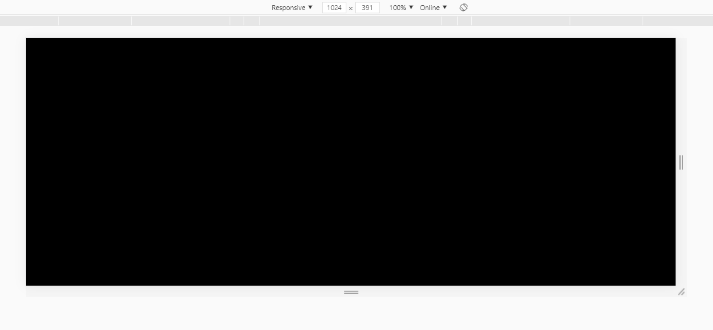
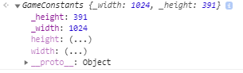
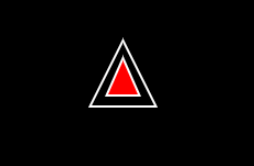
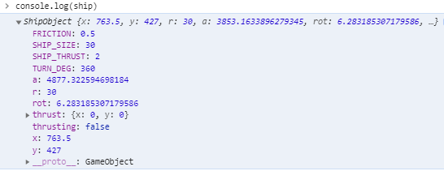
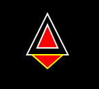
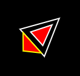
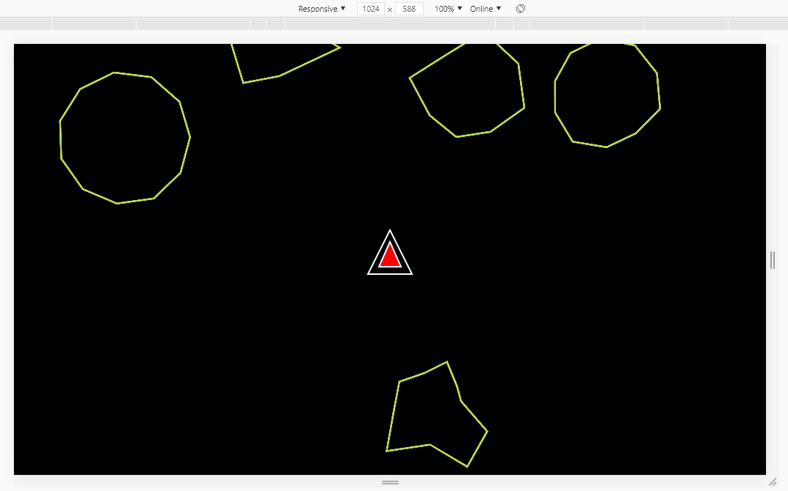

An OOP guide to Creating an Asteroids Game using Vanilla JS
written by drGaud.
I had came across this youtube video on how to create a game that is a childhood favourite of mine. The legendary Asteroids from Atari.[1]

I figured why the hell not, I am getting a bit better at Javascript why not give this a shot. Credits to the instructor for making a throughly enjoyable code-along video tutorial of this game.
What made this particular tutorial 'enjoyable' was that the instructor was using pre-ES6 standards in the script. It wasn't written in good old 'strict mode' and could of done with some Object Orientated Approach. In a way this was what I have been learning whilst I have been meandering my way through the Javascript delta. So I figured as a challenge to make a similar program to what was demonstrated in the video but bring it up to spec.
Lets Begin
I wish to let you know, I have made this script extremely verbose by using JSDocs [2]. This commenting style has alot of benefits not only readability but also with use with IDE's. I comment on everything, and make my code as close to English as possible, apart from the math, that is just the nature of maths unfortunately.
Lets begin by getting the boilerplate stuff out the way.
We are going to be needing a asteroidGame.html file and a game.js script file within the same directory.
asteroidGame.html should look like this:
<!DOCTYPE html> <html lang="en"> <head> <meta charset="UTF-8"> <meta name="viewport" content="width=device-width, initial-scale=1.0"> <title>Asteroids Game</title> </head> <style> *{ margin:0; padding:0; } canvas{ display: block; position: relative; width: 100%; height:100vh; overflow: hidden; overflow-y: hidden; } </style> <body> <canvas id="gameCanvas"> <p>Huh, your browser doesn't seem to support HTML5! Sorry bud,</p> </canvas> </body> <script src="game.js"></script> </html>
Quickly explaining what is going on here. We have a couple of basic style rules to allow the game to be applied to the full size of the viewport.
Within the <canvas> element we have a fallback tag in case the browser doesn't support the canvas element.
Now load the html file through your local dev server and have it open. This was we can see the work that will be done in the JS being reflected in the browser.
Now the boilerplate for the game.js is a lot easier. At the top of the file we will be adding the 'Strict Mode' Command to the Global Environment, being at the top, this sets the rest of the script to adhere to following the ECMA - Standards of writing JavaScript. It should look like this:
'use strict'; //Placed on line 1
Setup the Canvas
To set-up the canvas for the game, we first have to grab the canvas from the DOM.
const canvas = document.getElementById('gameCanvas');
Next we set-up the context for the canvas, stating that we will be using a 2-Dimensional plane instead of a 3-Dimensional one.
const ctx = canvas.getContext('2d');
Setting up the Animation Loop
Now lets get something on the screen. To do this we will be using the requestAnimationFrame API here the original tutorial had setup their own animation loop using setInterval() running at 30 fps which was creating sever amount of janking motion when it was rendering. But by using the requestAnimationFrame the performance of the script was notably improved but it forced my hand to having to do the tutorial in a different way.
//place this at the bottom of the script function gameAnimation(){ //Draw the Background -Space ctx.fillStyle = "black"; ctx.fillRect(0,0,width,height); //Do other stuff here //Request animation frame requestAnimationFrame(gameAnimation) } //Starting the Game Animation gameAnimation();
You should have a black screen that occupies the full viewport.

Next up we will be adding some functions that we will be needing throughout the script in various places so we will put them in the global scope.
Reusable Functions
I like to keep the global variables and functions right at the top of the script.
We will be adding to it as we go so its good to understand where to put the stuff that belongs in the global scope.
Random Number Generator
/** * @function RandomNumber Generator * @param {Number} min -Lowest Number in Range * @param {Number} max - Highest Number in Range * @returns Random Number between the range of min - max */ function randomNumber(min,max){ return Math.floor(Math.random()*Math.floor(max-min) + min) }
Here we are creating a function that would return a random number between two arguments. This way we can generate a random number between a range of numbers, say 1-10 and it would give a random number when invoked.
Random Decimal Number Generator
/** * @function randomNumberDecimal Number * @returns Random Decimal number fixed to 4 decimal places. */ function randomNumberDecimal(){ return +Math.random().toPrecision(4) }
Here we are ensuring that the return value is an integer(number) by using the ternary + symbol. You can try this in the console:
let a = '10'; console.log(a) // ''10'' typeof(a) //"string" let b = +a console.log(b) // 10 typeof(b) //"number"
Next because we want to for a couple of reasons to curtail the amount of decimal numbers generated, so we fix it to 4 decimal places. Which is sufficiently long to be random and small enough that it wouldn't take up extra memory when computing.
Convert to Radians
/** * @function convertRadians * @param {Number} degrees in Decimal * @returns Degrees in Radians */ function convertRadians(degrees){ return +(degrees / 180 * Math.PI) }
Javascript likes radians, as it turns out. [3]. This will save a lot of unnecessary math overhead when we start making the ship rotate clockwise and counter-clockwise.
Working out the Distance between Objects
These two functions carry out a similar purpose to each other. The long and short of it is we will be working out the distance between two points using cartesian geometry.[4]
/** * @function distanceBetweenPoints * @description * Takes the cartesian distance between two points A(x,y) and B(x,y) * * @param {Number} x1 - X - Co-ordinate of the Primary Object * @param {Number} y1 - Y - Co-ordinate of the Primary Object * @param {Number} x2 - X - Co-ordinate of the Secondary Object * @param {Number} y2 - Y - Co-ordinate of the Secondary Object * @returns Distance in Pixels * */ function distanceBetweenPoints(x1, y1, x2, y2) { return Math.sqrt((x2 - x1)** 2 + (y2 - y1)**2) }
The next function takes the same principles and apply it to circles [5]
/** * @function distanceBetweenCircles * @param {Number} x1 - X - Co-ordinate of the Primary Object * @param {Number} y1 - Y - Co-ordinate of the Primary Object * @param {Number} r2 - R - Co-ordinate of the radius of the Primary Object * @param {Number} x2 - X - Co-ordinate of the Secondary Object * @param {Number} y2 - Y - Co-ordinate of the Secondary Object * @param {Number} r2 - R - Co-ordinate of the radius of the second Object * @returns * Returns the distance between two circles */ function distanceBetweenCircles(x1,y1,r1,x2,y2,r2){ return Math.ceil(Math.sqrt((x2 - x1)**2 + (y2-y1)**2) - (r2+r1)) }
Now that is the Global Scope populated with the few functions that we will be needing elsewhere in the script.
Setting up the Game Objects Class
So in order to keep with a strictly Object Orientated Approach to making this Asteroids game, we need to create some parent classes for our objects.
The best way to approach this is by breaking up the objects that we will be having into common properties and what is exclusive to itself.
Lets break this out:
- We need to keep a single point of truth for a lot of the game variables that we would be using repetitively throughout the script. There would also be methods(functions) that would be solely specific to the game and not related to either the spaceship or asteroids. If anything they should be able to access this as a reference.
see class GameConstants. - We need to have a shared object that would hold similar properties that would be between both the spaceship and the asteroids. From this we can then build out each object
see class GameObject - Building a object literal for the spaceship and asteroids respectively. Each would have methods that would be relevant to them. keeping the inheritance of these objects separate.
see class ShipObject
see class AstroObject
class GameConstant
First up we are going to create a parent object for all the game constants that we would be using. The original tutorial has these cluttering the global scope which makes it awfully clumbersome. By moving these to an object we would be making it easier to reference and manage the constants in the game.
First up we would need to get the width and height of the canvas and have this automatically update everytime the window is resized. This keeps the canvas elements inside the canvas respective of the viewport as it changes sizes. I would say trust me, by getting this out early doors we can work with a more pixel sharp and responsive canvas. Which is to the benefit of the greater good.
We would be using the getter accessor method [6] if you are unfamiliar with it, this is a great introduction.
class GameConstants{ constructor(){ /** * @this this._width - Private width variable that would store the size of the window width */ this._width = Number(); /** * @this this._height - Private Height variable that would store the height of the window */ this._height= Number(); /** * Calls the getCanvasDimensions method */ this.getCanvasDimensions(); //Getting the Width and Height as soon as the Window loads window.addEventListener('load',()=>{ this.getCanvasDimensions() }) //As the window is resized we are getting the new Canvas Dimensions window.addEventListener('resize',()=>{ this.getCanvasDimensions(); }) } getCanvasDimensions() { // Width is determined by the css value for the viewport width this is then respected by the device pixel ratio. This is then used to set the canvas.width value this._width = Math.round((Number(getComputedStyle(canvas).getPropertyValue('width').slice(0,-2))/devicePixelRatio) * devicePixelRatio); //Setting the canvas width canvas.width = this._width // height is determined by the css value for the viewport height this is then respected by the device pixel ratio. This is then used to set the canvas.height value this._height = Math.round((Number(getComputedStyle(canvas).getPropertyValue('height').slice(0,-2))/devicePixelRatio) * devicePixelRatio); //Setting the canvas height canvas.height = this._height } get width(){ //This sets the width to the private _width value return this._width } get height(){ //This sets the height to the private _height value return this._height } } }
There is a couple of things happening here that is worth commenting on. First we set internal this properties for the width and height. The purpose being is that these update as the window loads up, so it doesn't have a null value. We place a method call within the constructor function as we need to establish that the method call getCanvasDimensions is called when it the object is created. Secondly we place event listeners again within the constructor to re-obtain the new width and height value as the window resizes.
We then use the get accessor function which lets us get the new value when it is called. This is all done in the name of responsiveness. We will see exactly how it looks soon once we start drawing the spaceship.
Next we are going to be instantiating this new object literal to something that we can now reference, and that is what we are calling it.
let reference = new GameConstants()

This looks right, now go ahead and resize the window and console.log(reference.width) and console.log(reference.height) respectively. Notice how it presents the new sizes as the window changes. (This was a huge win for me, three canvas projects later and I finally fix this bug! 💪)
As we begin to develop the game out we will be adding to this Object Class with additional properties.
Now since we are using requestAnimationFrame() API we need to understand something about it. It is a magical recursive loop, that doesn't break your computer. But as it does its looping it does so at an inconsistent rate, this is often client-machine dependant. So in a single second, 1000ms the recursive loop will go over itself anywhere between 1000-100 times in a second. Each time it does it re-draws the scene or frame. Each frame is a snapshot of the programs recalculations. Doing it this fast can send a lot of the calculations of whack, as each scene is being updated it recalculates(re-executes) all the object values to show their new position on each frame. To balance this out we set a property to indicate the number of frames to execute each second. This gives our animation a steady frame rate, of each frame being executed 1/60th of a second or 16.6ms. So that's one new frame every 16.6ms, which is easier for the calculations which we will be doing. ( yes this is a math warning...what you thought this would be easy, 🐕-please)
So in the class GameConstants constructor function add this with the other this. properties.
/**@this this.FPS - Frames per Second */ this.FPS = Number(60)
class GameObject
This is a shared parent object literal class that would contain the most basic shared properties between the spaceship and the asteroids. This is straightforward:
class GameObject{ /** * * @param {Number} x - Position of Object on X - Axis * @param {Number} y - Position of Object on Y - Axis * @param {Number} r - Radius of the Object * @param {Number} a - Angle of the Object (in deg) */ constructor(x,y,r,a){ /** * @this this.x - Position of the Object on the X - Axis */ this.x = Number(x); /** * @this this.y - Position of the Object on the Y - Axis */ this.y = Number(y); /** * @this this.r - Radius of the Object */ this.r = Number(r); /** * @this this.a - Angle of the Object - converted to Radians */ this.a = convertRadians(a); //Converted to Radians } }
Really this would save us repeating these properties as we create the spaceship and the asteroids.
class ShipObject
Right now lets do something fun. For this class we will be building up over time. We will be adding new properties to it as we make the ship more complex.
We will be looking to make the following spaceship.
.
To do this lets first extend the GameObject class to start incorporating some of the properties that we need for building our spaceship.
Setting up the Object Literal
class ShipObject extends GameObject{ constructor(x,y,r,a,rot,thrusting,thrust){ super(x,y,r,a)//Inheriting the Properties from the Parent Object /** * @this this.rot - Ship can only rotate around 360deg of a circle converted to Radians */ this.rot = convertRadians(rot);//Converted it into Radians /** * @this this.thrusting - Boolean Flag! True when the ship trust is active */ this.thrusting = Boolean(thrusting); /** * @this this.thrust - Provides a vector for the ship when travelling */ this.thrust = {...thrust}; /** * @this this.SHIP_SIZE * @description Height of the Ship in px's - Same as the Radius */ this.SHIP_SIZE = Number(r); /** * @this this.Friction * @description Adds a Friction co-efficient to the movement of the ship:Friction in Space (0 = no friction, 1 = 100% friction) */ this.FRICTION = Number(0.5); /** * @this this.SHIP_THRUST * @description Acceleration of the Ship, in px/sec^2 */ this.SHIP_THRUST = Number(2); // acceleration of the Ship, px/sec^2 /** * @this this.TURN_DEG * @description This is the turning angle in deg/sec. */ this.TURN_DEG = Number(360); // Turns in deg/sec } //Methods Go Here }
Quick note: I have kept the constants that the ship would be using like typed in Uppercase, which is just to make it easier to know what is a variable and a constant.
this.SHIP_SIZE this.FRICTION this.SHIP_THRUST this.TURN_DEG
To instantiate the object we will be calling it using:
//On the Global scope for the being let spaceship = new ShipObject( reference.width /2, reference.height/2, 30, 90, 360, false, {x:0,y:0} );
This should produce the following when console.log(ship) (x & y values will be somewhat different)-(it was originally called ship🚢, this got changed to spaceship🚀)

Awesome, we have gotten our object made up with little to no complications what-so-ever. 😑
Draw method
Now lets draw this spaceship on the screen.
First we would want to create a draw method on the ShipObject's prototype chain.
class ShipObject{ //methods draw(){ //ctx styles ctx.strokeStyle = 'white' ctx.lineWidth = 2; //The outer Triangle ctx.beginPath(); ctx.moveTo( //Nose of the spaceship this.x + 4 / 3 * this.r * Math.cos(this.a), this.y - 4 / 3 * this.r * Math.sin(this.a) ); ctx.lineTo( // rear left this.x - this.r * (2 / 3 * Math.cos(this.a) + Math.sin(this.a)), this.y + this.r * (2 / 3 * Math.sin(this.a) - Math.cos(this.a)) ); ctx.lineTo( // rear right this.x - this.r * (2 / 3 * Math.cos(this.a) - Math.sin(this.a)), this.y + this.r * (2 / 3 * Math.sin(this.a) + Math.cos(this.a)) ); ctx.closePath();//Finishes of the Outer Triangle ctx.stroke(); //Drawing the Cockpit ctx.beginPath(); ctx.fillStyle = 'red'; ctx.lineWidth = 2; ctx.moveTo( // top of the cockpit this.x - (1 / 5 * this.r - this.SHIP_SIZE) * Math.cos(this.a), this.y + (1 / 5 * this.r - this.SHIP_SIZE) * Math.sin(this.a) ); ctx.lineTo( // rear left of the cockpit this.x - this.r * (1 / 3 * Math.cos(this.a) + 0.5 * Math.sin(this.a)), this.y + this.r * (1 / 3 * Math.sin(this.a) - 0.5 * Math.cos(this.a)) ); ctx.lineTo( // rear right of the cockpit this.x - this.r * (1 / 3 * Math.cos(this.a) - 0.5 * Math.sin(this.a)), this.y + this.r * (1 / 3 * Math.sin(this.a) + 0.5 * Math.cos(this.a)) ); ctx.fill();//Fill in the Shape ctx.closePath();//Finishes of the Triangle ctx.stroke(); //More to be added.... }
Now to have the ship drawn on the screen we would invoke this method within the gameAnimation Loop.
//Game Animation Loop function gameAnimation(){ ctx.fillStyle = 'black' ctx.fillRect(0,0,reference.width,reference.height); //Drawing the 🚀 spaceship.draw(); //Request animation frame requestAnimationFrame(gameAnimation) } gameAnimation()
You should have an object now appear on the canvas that should look very similar to this image of the spaceship.
👍
Making the ship move
Now we want to make the ship move about. If you noticed we created a thrusting flag, which just records if the ship's thrust is On or Off. We can use these flags to determine when to switch on and off the thruster, which would be seen as:
We would also need to rotate the ship clockwise and counter-clockwise. This would be controlled by keyboard inputs which we would make up second.


But first lets make the functionality for the spaceship to fly around space.
Back in the draw() method we will add this block of code:
class ShipObject{ //methods draw(){ ... if(this.thrusting){ //Add Thrust vector this.thrust.x += this.SHIP_THRUST * Math.cos(this.a) / reference.FPS **1/2; this.thrust.y -= this.SHIP_THRUST * Math.sin(this.a) / reference.FPS **1/2 ; //Draw thrust animation ctx.beginPath(); ctx.strokeStyle = "yellow"; ctx.fillStyle = "red" ctx.lineWidth = 2; ctx.moveTo( // rear center behind the spaceship this.x - 4 / 3 * this.r * Math.cos(this.a), this.y + 4 / 3 * this.r * Math.sin(this.a) ); ctx.lineTo( // rear left this.x - this.r * (2 / 3 * Math.cos(this.a) + 0.75 * Math.sin(this.a)), this.y + this.r * (2 / 3 * Math.sin(this.a) - 0.75 * Math.cos(this.a)) ); ctx.lineTo( // rear right this.x - this.r * (2 / 3 * Math.cos(this.a) - 0.75 * Math.sin(this.a)), this.y + this.r * (2 / 3 * Math.sin(this.a) + 0.75 * Math.cos(this.a)) ); ctx.fill();//Fill in the Shape ctx.closePath();//Finishes of the Triangle ctx.stroke(); } //Applying Friction to slow down the spaceship when Not thrusting if(!this.thrusting){ this.thrust.x -= this.FRICTION * this.thrust.x /reference.FPS this.thrust.y -= this.FRICTION * this.thrust.y /reference.FPS } //Rotate spaceship this.a += this.rot //Move the spaceship this.x += this.thrust.x; this.y += this.thrust.y; //Handle screen edges
Now lets get the event listeners setup. In the GameConstant literal we will create two methods, one to handle the key-down press event and one as we release the key or the key-up press event. As we press down we will active the thrust and rotate the ship, and as we release we want to stop the thruster and rotation, else they would just continue to be on.
class GameConstants{ //methods keyDown(event){ if(event.key === 'ArrowUp' || event.key === 'w'){ //Start Thrusting spaceship.thrusting = true } if(event.key === 'ArrowRight' || event.key === 'a' ){ //Rotate Right spaceship.rot = convertRadians(spaceship.TURN_DEG) / reference.FPS } if(event.key === 'ArrowLeft' || event.key === 'd' ){ //Rotate Left spaceship.rot = -convertRadians(spaceship.TURN_DEG) / reference.FPS } } keyUp(event){ if(event.key === 'ArrowUp' || event.key === 'w'){ //Stop Thrusting spaceship.thrusting = false } if(event.key === 'ArrowRight' || event.key === 'a' ){ //Stop Rotating Right spaceship.rot = 0; } if(event.key === 'ArrowLeft' || event.key === 'd' ){ spaceship.rot = 0; } }
To add these event listeners we do so just above the gameAnimation loop at the bottom of the script.
document.addEventListener('keydown',reference.keyDown) document.addEventListener('keyup',reference.keyUp)
Now you should have your spaceship moving and zooming about that screen 😊.
Handle screen edges
But we have a problem as the ship moves off the screen it doesn't appear on the opposite side of where it exited. This is a problem that can be fixed by adding a method on the GameConstant Object that would handle for screen edges.
class GameConstants{ //methods screenEdges(obj){ if(obj.x < 0 - obj.r){ obj.x = this.width + obj.r } else if(obj.x > this.width + obj.r){ obj.x = 0 - obj.r } if(obj.y < 0 - obj.r){ obj.y = this.height + obj.r } else if(obj.y > this.height + obj.r){ obj.y = 0 - obj.r } }
Here we will be passing in different objects like the spaceship and asteroids and as such we will be calling on this function a lot.
Back in the draw() method we have setup we will apply this statement at the bottom
//Handle screen edges reference.screenEdges(this)
Now you the spaceship should reappear on the opposite side of where it entered. Now we are flying 🚀.
The spaceship object is pretty complete for now, we will come back and add other functionality like; lasers and collision detection etc.
class AstroObject
There is a lot going on with the Asteroids, more than the spaceship. Firstly we need to create an asteroid field, where each asteroid would randomly appear on the screen and have their own respective vectors which lets them follow a path across each frame. They also should be able to collide with each other and ricochet of each other. We would also need to be able to destroy them completely and replace them with smaller fragments.
But before we do anything that remotely complicated, we need to create our Asteroid Object literal. This literal will describe the properties that we would be using for each asteroid.
class AsteroidObject extends GameObject { constructor(x,y,r,asteroidIndex){ super(x,y,r) /**@this this.a - returns a random angle in radians */ this.a = Math.random() * Math.PI * 2 /**@this this.vX - random Velocity on the x-axis */ this.vX =randomNumber(15,30)/reference.FPS * (randomNumberDecimal() <0.5 ? 1 : -1) /**@this this.vY - random Velocity on the y-axis */ this.vY = randomNumber(15,30)/reference.FPS * (randomNumberDecimal() <0.5 ? 1 : -1) /**@this this.vertices - Random number of vertices for the polygon to be generated */ this.vertices =Math.floor(randomNumber(2,8) + randomNumber(2,8)),//Each asteroid has a random number of vertices /**@this this.jaggedness - random determination on the amount of jaggedness on the asteroid */ this.jaggedness = randomNumberDecimal(), // 0 = none 1 = 100 /**@this this.offsets - Array of positions for the dimensions of the polygon */ this.offsets = [] /**@this this.asteroidIndex - Asteroid Index position in the Array */ this.asteroidIndex = Number(asteroidIndex); } }
Here we are going to be setting the asteroid x,y and radius separately, this way we can give them random values at run-time. We will come back to this. Next we are setting the vX & vY using a random number that would depending on the logic condition would either appear to be a positive integer or a negative integer.
Because we are wanting the asteroids are going to be jaggy and random polygons we need to have a few extra values to make such predictions.
Creating Asteroid Field
Now lets create an asteroid field. Since this is a feature of the game, we would be placing this next method on the GameObjects prototype chain.
class GameConstants{ //methods createAsteroidField(numberOfAsteroids){ /** * @function createNewAsteroid * @param {Number} x * @param {Number} y * @param {Number} r * @description generates a new Asteroid Object */ function createNewAsteroid(x,y,r){ let asteroid = new AsteroidObject(x,y,r); //Setting the values for the asteroids jaggedness for(let offset = 0; offset < asteroid.vertices; offset++ ){ asteroid.offsets.push( Math.random() * asteroid.jaggedness * 2 + 1 - asteroid.jaggedness ) } return asteroid } //clear the existing array this.asteroidField = new Array(); //creating placeholders let x,y,r for(let index = 0; index< numberOfAsteroids; ++index){ x = randomNumber(0,this.width) y = randomNumber(0,this.height) r =randomNumber(50, 100); //Giving the asteroid a Label i = index //Creating a buffer zone around the ship to prevent the asteroids randomly spawning on the ship if(distanceBetweenPoints(spaceship.x,spaceship.y,x,y) <= spaceship.r * 5 + spaceship.r){ x = randomNumber(0,this.width) + (spaceship.x + spaceship.r + 20); y = randomNumber(0,this.height) + (spaceship.y + spaceship.r + 20); } this.asteroidField.push(createNewAsteroid(x,y,r)) } return this.asteroidField }
This method will create a number of asteroids from a parameter which we can change throughout the script. This will come in handy when we want to create more asteroids.
We are also creating a buffer zone around the ship where if the asteroid spawns near a radial distance to the ship, it would be relocated to somewhere else in space and kept a distance away.
We then push each newly created asteroid object to the asteroidField which is an array of asteroid objects.
To call this method we place it for the time being on the global scope.
//placed ideally just above the Animation Loop reference.createAsteroidField(5)
Draw Method
The asteroids themselves each has their own draw method. This method is on the AsteroidObject prototype chain. Here we are instructing it to draw a polygon based on the values in the asteriod.offset array. This gives each asteroid their own unique shape. Kinda like snowflakes.
class AsteroidObject{ //methods draw(){ //Draw Asteroids ctx.strokeStyle = '#BADA55'; ctx.lineWidth = 2; ctx.fillStyle = 'transparent'; //draw a path ctx.beginPath(); ctx.moveTo( this.x + (this.offsets[0] * this.r) * Math.cos(this.a), this.y + (this.offsets[0] * this.r) * Math.sin(this.a) ) //draw the polygon and jaggedness for each asteroid for(let polygon = 1; polygon < this.vertices; polygon++){ ctx.lineTo( this.x + (this.offsets[polygon] * this.r) * Math.cos(this.a + polygon * Math.PI * 2 / this.vertices), this.y + (this.offsets[polygon] * this.r)* Math.sin(this.a + polygon * Math.PI * 2 / this.vertices) ) } ctx.fill(); ctx.closePath(); ctx.stroke(); //handle collision detection //move asteroid this.x += this.vX this.y += this.vY //handle edge of screen reference.screenEdges(this) }
To call this function in the Animation Loop we will add the following Array.forEach() loop.
//Global Scope-At the Bottom of the Script function gameAnimation(){ ctx.fillStyle = 'black' ctx.fillRect(0,0,reference.width,reference.height); spaceship.draw(); //Drawing each asteroid on the screen reference.asteroidField.forEach((asteroid)=>{ asteroid.draw() }) //Request animation frame requestAnimationFrame(gameAnimation) }
Now you should have nice asteroids, all floating about the screen 😍
Now we can start building a game.
Building out the Game
Here we are going to be adding more functionality to the game, these are things that I thought: that would be cool to have. And so it has naturally grown arms and legs.
The things we would be adding to this would be:
-
collision detection between:
- ship and asteroid: where the ship is blown up. We would have an exploding animation. It should decrease the game lives counter by one.
-asteroid and asteroid: where each asteroid if it collides with another it should ricochet off each other and go in different directions.
- ship and asteroid: where the ship is blown up. We would have an exploding animation. It should decrease the game lives counter by one.
-
Lasers
- shooting and blowing up each asteroid into smaller pieces. Keeping a score as each asteroid is breaking up. If the pieces break into smaller fragments, once they reach a certain size they disappear.
-
Keep a score and a Lives counter. Game ends when the player runs out of lives. Levels increase if the player is still alive and their is no more asteroids left.
(Ill add more here as we go, something about it growing arms and legs)
Collision Detection
Remember the distanceBetweenPoints() and distanceBetweenCircles() that we created in the global space. This is where we would utilize it.
Asteroid
To see if a collision has happened we are checking if the distance between two asteroids is less than the radius of the asteroid about to collide. If it does we will change the vector values for both the asteroids in question.
In the AsteroidObject methods chain we will add this code block that pretty much does that with little Jank.
class AsteroidObject{ //methods asteroid2asteroidCollision(){ let currentAsteroid = this; reference.asteroidField.forEach((otherAsteroid)=>{ if(currentAsteroid != otherAsteroid){ if(distanceBetweenCircles(currentAsteroid.x,currentAsteroid.y,currentAsteroid.r,otherAsteroid.x,otherAsteroid.y,otherAsteroid.r) < currentAsteroid.r + currentAsteroid.x ){ //Make the asteroids 'softly' ricochet off each other //There has been many different attempts at getting this right, this is by far the best attempt at getting the asteroids to move off and change direction and their velocity that produces the least amount of Janking currentAsteroid.vX = currentAsteroid.vX/( (reference.FPS / 2)) + Math.sin(-currentAsteroid.a) otherAsteroid.vX = otherAsteroid.vX/ (reference.FPS / 2) + Math.sin(-otherAsteroid.a) currentAsteroid.vY = currentAsteroid.vY/ (reference.FPS / 2) + Math.cos(-currentAsteroid.a) otherAsteroid.vY = otherAsteroid.vY/ (reference.FPS / 2) + Math.cos(-otherAsteroid.a) //This was easy...😑 } } }) }
We are using the forEach() array iterator to check if the asteroid that is currently being drawn in that frame is not the same as every other asteroid.
We then check if the distance between the asteroids is less than the asteroid radius that is colliding with it , meaning that they are overlapping at the radial point of each asteroid. We are then changing the velocity of both asteroids respective of the framerate and their angles. We then switch between positive and negative integers depending on a random value.
To instantiate this method every time the asteroid is drawn we place it within the AsteroidObject.draw() method.
class AsteroidObject{ //methods draw(){ ... ctx.stroke(); //Handle collision Detection this.asteroid2asteroidCollision() this.asteroid2shipCollision() //move asteroid this.x += this.vX this.y += this.vY //handle edge of screen reference.screenEdges(this) }
To really test this new method it would be good to increase the number of asteroids in the asteroid field to something like 15
reference.createAsteroidField(15)
Ship
To detect if the Ship has collided with an asteroid we will need to register a spaceship.exploding flag as true. For if the ship is exploding we would want to draw an explosion animation. Then reset the ship's position to the center of the screen. (and reduce the lives's count by one...-this is a problem atm)
To detect the asteroid 2 ship collision we would apply this method to the AsteroidObject chain.
class AsteroidObject{ ... //methods asteroid2shipCollision(){ if(distanceBetweenPoints(this.x,this.y,spaceship.x,spaceship.y) < spaceship.r + this.r && !spaceship.immune){ // register that the ship is exploding reference.shipExploding = true } } }
There is a few extra properties that had to be set to set this up. First in the GameConstants Object literal we put this flag in.
class GameConstants{ constructor(){ ... /**@this this.shipExploding - Registers a flag if the ship is exploding */ this.shipExploding = false
class ShipObject{ //constructor constructor(...){ /**@this this.immune - Immunity from Explosions Flag */ this.immune = Boolean(false) } //methods explodeShip(){ //Prevent the ship from moving if(!this.immune){ this.thrust = { x:0, y:0 }} //Drawing the Explosion ctx.beginPath(); //Outermost circle - Dark Orange ctx.strokeStyle = '#db4200'; ctx.fillStyle='#db4200' ctx.arc(this.x,this.y, this.r +10, 0, Math.PI * 2, false); ctx.fill() ctx.stroke(); // n-1 circle - Orange ctx.beginPath(); ctx.strokeStyle = '#f26900'; ctx.fillStyle='#f26900' ctx.arc(this.x,this.y, this.r + 5, 0, Math.PI * 2, false); ctx.fill(); ctx.stroke() // n-2 circle - Yellow ctx.beginPath(); ctx.strokeStyle = '#f29d00'; ctx.fillStyle='#f29d00' ctx.arc(this.x,this.y, this.r + 2, 0, Math.PI * 2, false); ctx.fill(); ctx.stroke(); } }
This is the exploding animation function. We are basically instructing the ctx render engine to create three concentric circles to give the appearance of an explosion. Now we are going to set this to be active if the ship is registered as being exploding
Once it explodes after a certain time limit we want it to respawn at the center of the screen. (also I would ideally like it to decrease a live but that is still proving tricky, mind you something could be said about the power of procrastination, if it wasn't for this problem and some others that has managed to of been resolved, like the janking collisions between asteroids I mean it was ugly for a while. And the resizing the screen, I cant tell you how chuffed I am still at this. So I still hold out hope yet, that by the time we get to that, I've of figured it out by then 🙊 )
Once the spaceship explodes we want to give it some sort of immunity from being destroyed for a period of time to let the user get somewhere safe before they are susceptible to being destroyed by an asteroid.
So lets add a change to the spaceship, If it is immune it turns golden >?
class ShipObject{ //methods draw(){ //At the top if(this.immune){ ctx.strokeStyle = "gold"; ctx.fillStyle = "gold" }else{ ctx.strokeStyle = "white"; ctx.fillStyle = "red" } //Delete line 390 ... //Drawing the Cockpit ctx.beginPath(); // ctx.fillStyle = 'red';<---Delete this line }
This method is placed on the GamesConstants methods chain,
class GameConstants{ //methods createNewSpaceShip(){ if(spaceship){ //Delete the existing spaceship 🚀🔥 spaceship = null; } //Instantiating a new spaceship 🎆🚀 let newSpaceship = new ShipObject( reference.width /2, reference.height/2, 30, 90, 360, false, {x:0,y:0} ) //Making the New Ship immune to Being Exploded newSpaceship.immune = true //Switch off the Exploding Flag reference.shipExploding = false //This just makes sure we can move afterwards newSpaceship.thrusting =false return spaceship = newSpaceship; } }
Okay everything should be set now to make it work. In the animation loop we write the following
function gameAnimation(){ ... if(!reference.shipExploding) { spaceship.draw() }else{ spaceship.explodeShip(); //Timeouts to carry out these functions after a certain period of time. setTimeout(reference.createNewSpaceShip,1000) setTimeout(()=>{ //Removing the ships immunity after 5 secs spaceship.immune = false },5000) }
Using setTimeout() macro-promise we can do some time-delayed actions like, setting the explosion to last for 1 second, and then create a new spaceship. Once that promise is carried out we then look to remove the immunity from the ship after a period of 5 seconds...
Hopefully all those flags we set work and you should have something that goes like this:
Right now tomorrow we will get this finished off...
Sources
Asteroids is spaced-themed shooter arcade game that was created by Lyle Rains, Ed Logg, dominic Walsh and was released in Nov 1979 by Atari Inc. Link to wiki:Asteroids. ↩︎
Jsdocs Further information on how to use JSDocs for better commentary and use of Intellisense with IDE's Link to JSDoc spec. ↩︎
Radians in JavaScript: Link to paper ↩︎
Further explanation on geometric distance.
Online Explaination.
wiki:Distance. ↩︎Further information on the maths behind calculating the distance between two circles Link to explanation.
Link to StackOverflow. ↩︎Further information on using the Getter Object Accessor Function MDN:function-Get ↩︎